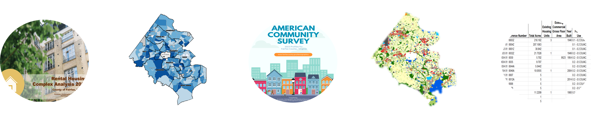

Explore Fairfax County EDSR Data Products public access
Browse our data products and dive straight into downloads, reports, and interactive visualizations
The Economic, Demographic, and Statistical Research (EDSR) unit in the Department of Management and Budget conducts quantitative research to create data and provide technical expertise that supports county agencies and initiatives and public information inquiries. The EDSR is also the U.S. Census Bureau's liaison.
Integrated Parcel Lifecycle System (IPLS)
Integrates and leverages the most current administrative data from multiple Fairfax County databases to generate highly accurate parcel-level estimates and forecasts on housing unit, household, and population.
- Demographic Reports (1973-2024)
Delivers comprehensive annual demographic trend data for Fairfax County across a variety of geographic levels. - Demographic Mapper Application
Provides streamlined access to the most up-to-date aggregated demographic data for Fairfax County across 15 geographic levels, aligned with the Demographic Report of the year. - Fairfax County Open Geospatial Data (2024)
Provides parcel-level GIS data downloads on current housing units, households, and population; 30-year forecasts for housing units, households, and population; market sale ratios; and nonresidential gross floor area.
Tip: The IPLS data can be aggregated across any user-defined geographic areas. To maintain statistically reliable estimates. Please consult us for guidance.
Reports
Review and download recent and historial publications and technical notes.
- Demographic Reports (1973-2024)
Delivers comprehensive annual demographic trend data for Fairfax County across a variety of geographic levels. - Rental Housing Complex Analysis Reports (2000-2023)
Provides annual comprehensive overview of rental housing market in Fairfax County, highlighting key details such as the total number of units, vacancy rates, unit sizes, and rental costs. - Decennial Census/American Community Survey Summaries (2002-2023)
Offers data summaries on demographics and socioeconomic characteristics for Fairfax County. The Decennial Census Summaries also include a set of maps for review at the census tract level. - Existing Land Use Map & Reports, Zonning Reports, Underutilized Land Reports, and Structure Reports (2024)

Visualizations
Explore the complete catalog in our Data Visualization Gallery. Click here
- Featured EDSR Dashboards
- Fairfax County Overview
- Community Profiles
- Commuting Patterns
- U.S. Bureau of Economic Analysis (BEA) Industry Profiles
- Our Immigrant Neighbors
- Poverty
- Languages Spoken at Home by Fairfax County Elementary Students
- Older Residents
- Rental Housing Complex Summary
- Uninsured
- Internet Accessibility
- Featured EDSR StoryMaps
- A look to the Past
- Linked Visualizations for Fairfax County by U.S. Census Bureau
- Census Reporter
Visualize the latest 1-year ACS data on various topics - Data Profile
Summaries frequently requested socio-economic, housing, and demographic data from the the most recent Decennial Census & ACS 1-year and 5-year data for Fairfax County. - Narrative Profile
Provides short, analytic reports derived from the ACS 5-year estimates, covering 18 different topic areas for Fairfax County.
Fairfax County Overview